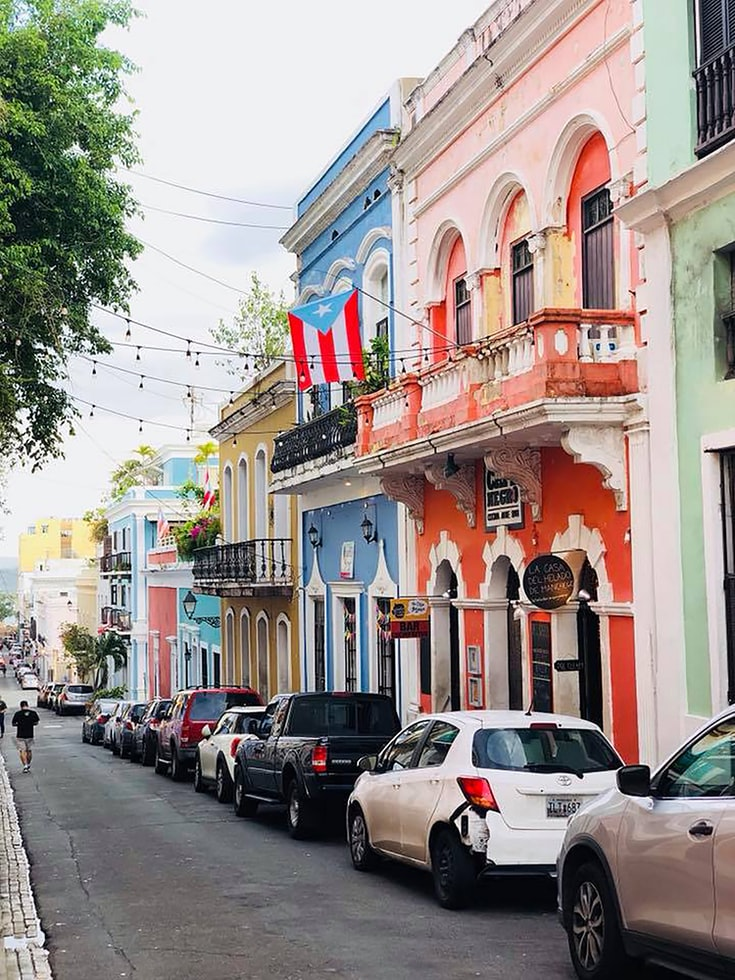
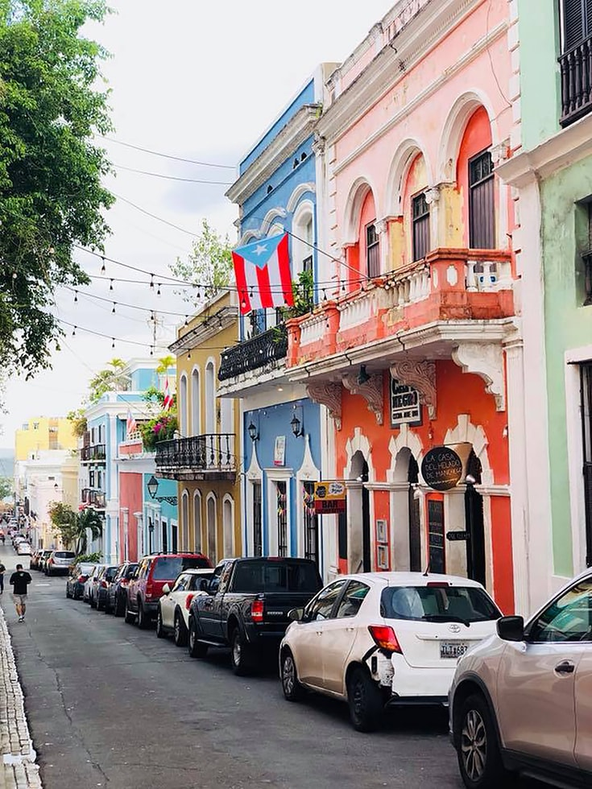

Destinos perfectos para conocer las playas del Caribe
Si tu cuerpo pide playa, aquí te traigo una lista con cinco lugares en el Caribe para que disfrutes del sol y la brisa del mar en uno de estos paraísos caribeños en mood desconexión total.
Holbox en la Riviera Maya, México.
Uno de los destinos favoritos en el Caribe es sin duda la Riviera Maya, pero pocos saben que más allá de Cancún y Tulum, existe un paraíso remoto en una de las playas del caribe mexicano. Estoy hablando de Holbox, un destino muy popular desde hace algunos años entre los visitantes extranjeros.
¿Cómo llegar a Holbox?
Para llegar a Holbox es necesario volar a Cancún y de ahí trasladarte a Chiquilá (1:52 h. de distancia aprox) en donde abordarás un ferry que en 20 minutos te dejará en la bella isla de Holbox. Al ser una isla muy pequeña, la oferta de hoteles en Holbox es reducida, pero con diferentes hospedajes para todos los gustos y presupuestos. Hay mucha actividad y cosas que hacer en Holbox. Uno de los grandes favoritos es el nado con el impresionante tiburón ballena. El verano es la mejor temporada para hacerlo, ya que ellos llegan a los alrededores de la isla entre junio y septiembre. Además, hay zonas para esnorquelear y disfrutar de la increíble fauna marina.
Si lo tuyo más bien es disfrutar del sol y borrar ese blanco fantasmal de tu piel, tírate en las playas –prácticamente vírgenes– de la isla o acuéstate en una de las hamacas que están plantadas en el mar. También puedes dar un paseo en bicicleta y descubrir rincones únicos de la isla Holbox. ¿Ya tienes hambre? La isla de Holbox tiene una gran oferta gastronómica destacando las pizzas de langosta, las tradicionales marquesitas y hasta churros rellenos.
Enamórate de San Juan, Puerto Rico.
La Isla del Encanto de Puerto Rico es una isla colmada de increíbles paisajes y habitantes con mucha buena onda que te harán sentir en casa. Entre las bondades de la isla, encontrarás actividades para todos los gustos y presupuestos. Si amas las playas, sobre todo aquellas poco exploradas, te recomiendo visitar los cayos cercanos a la isla. Para ello, puedes trasladarte al municipio de Fajardo entre 40 y 50 minutos al este de San Juan, desde donde podrás embarcarte en un catamarán para llegar a la reserva natural Cayo Icacos. Allí te enamorarás de las tonalidades de azul turquesa que refleja el mar. Te recomiendo realizar un poco de esnórquel o disfrutar de un día en la playa. El recorrido no acaba aquí, ya que tendrás que abordar nuevamente el catamarán para visitar tortugas, una zona ideal para esnorquelear y descubrir los hermosos corales del caribe.
Mallorca, Mofongo, Arroz con Habichuelas, Pernil y Coquito son solo algunas cosas que debes probar de la gastronomía de Puerto Rico. Si eres foodie, te recomiendo muchísimo contactar a Spoon Food Tours, quienes te ayudarán a explorar el Viejo San Juan con sus coloridas fachadas, mientras pruebas platillos locales.
Finalmente, si lo que buscas es no preocuparte por nada y pasar unos días disfrutando de una habitación con vista hacia la playa, deliciosa gastronomía y mucho sol, hay hoteles en San Juan Puerto Rico como el San Juan Marriott Resort Stellaris Casino Este tiene una ubicación de ensueño, pues se encuentra a tan solo 10 minutos del Aeropuerto Luis Muñoz Marin de San Juan, Puerto Rico. Visita su casino y no olvides consentirte en su Spa con un masaje de cuerpo completo. Regresarás a casa rejuvenecido y sin estrés.
 
